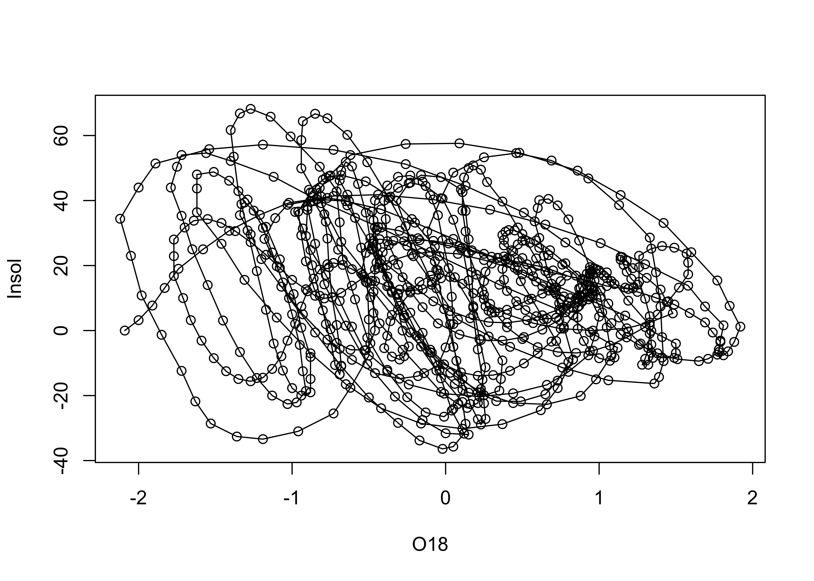
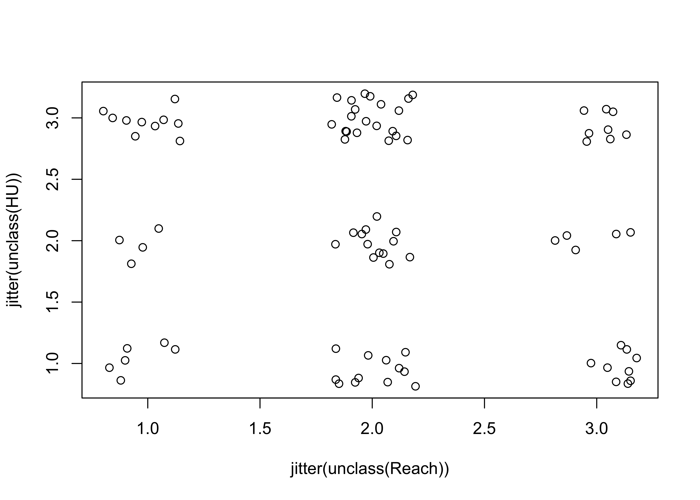
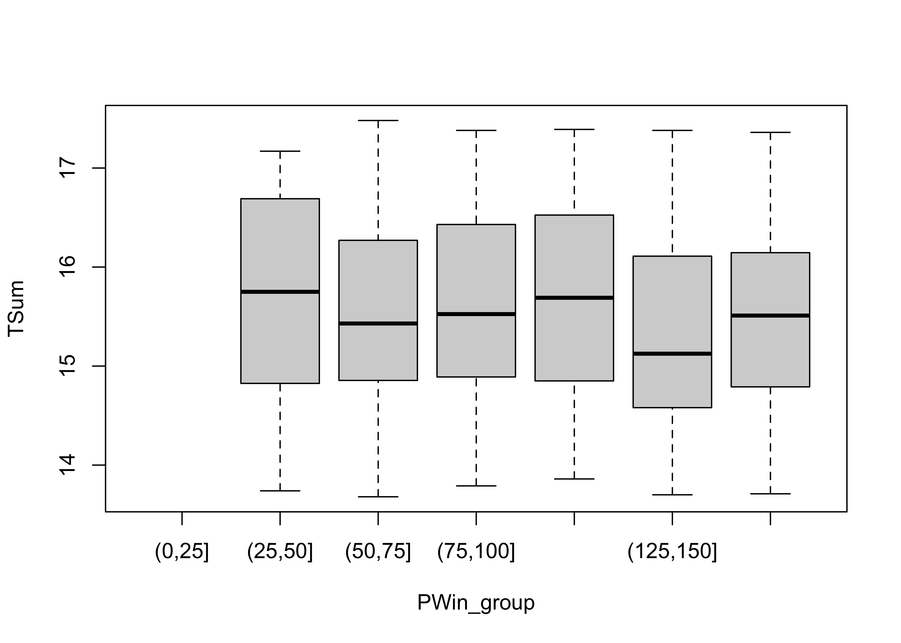

Bivariate Plots
NOTE: This page has been revised for Winter 2021, but may undergo further edits.
1 Introduction
Bivariate descriptive displays or plots are designed to reveal the relationship between two variables. As was the case when examining single variables, there are several basic characteristics of the relationship between two variables that are of interest. These include:
- the form of the relationship
- the strength of the relationship, and
- the dependence of the relationship on external (to the two variables being examined) circumstances.
Bivariate plots provide the means for characterizing pair-wise relationships between variables. Some simple extensions to such plots, such as presenting multiple bivariate plots in a single diagram, or labeling the points in a plot, allow simultaneous relationships among a number of variables to be viewed.
2 Basic scatter plots
The scatter diagram or scatter plot is the workhorse bivariate plot, and is probably the plot type that is most frequently generated in practice (which is why it is the default plot method in R).
Data files for these examples (download to the working directory and read in):
[orstationc.csv] [scanvote.csv] [sumcr.csv] [specmap.csv] [florida.csv] [sierra.csv] [ortann.csv] [cities.csv]
2.1 Scatter diagram/Scatterplot
A scatter plot displays the values of two variables at a time using symbols, where the value of one variable determines the relative position of the symbol along the X-axis and the value of a second variable determines the relative position of the symbol along the Y-axis.
Traditionally the dependent or response variable is plotted on the vertical or Y-axis, while the “independent”" or predictor variable is plotted on the horizontal or X-axis. The convention can be imposed on plots in by listing the horizontal or X-axis variable first, and Y-axis variable second (as om X-Y plots).
Plot annual temperature tann on the y-axis as a function of elevation elev on the x-axis
# use Oregon climate-station data
attach(orstationc)
plot(elev,tann)
Detach the orstationc data frame.
# detach orstationc dataframe
detach(orstationc)2.2 Variations on basic scatter plots
There are several variations on the basic scatter plot that can be made to enhance interpret ability of the plots.
2.2.1 Axis scaling
Linear, log (base 10), ln (base e) and probability-scale axes may be examined to linearize the relationship between variables
# use Scandinavian EU vote data [scanvote.csv]
attach(scanvote)
plot(Pop, Yes) # arithmetic axisPlot again, using log scaling of the x-axis:
# logrithmic axis
plot(log10(Pop), Yes) # logrithmic axis
Note how the log10 transformation linearizes the relationship. Logarithmic transformations basically compress the high end of the range of values of the transformed variable, and expand the low end.
detach(scanvote)2.2.2 Multiple plots with different y-axes
Differing symbol types may be used to distinguish multiple Y-variables plotted versus the same X-variable. Here, two y-axis variables are plotted vs the same x-axis:
# use Oregon climate-station data [orstationc.csv]
attach(orstationc)
opar <- par(mar=c(5,4,4,5)+0.1) # space for second axis
plot(elev, tann) # first plot
par(new=TRUE) # second plot is going to get added to first
plot(elev, pann, pch=3, axes=FALSE, ylab="") # don't overwrite
axis(side=4) # add axis
mtext(side=4,line=3.8,"pann") # add label
legend("topright", legend=c("tann","pann"), pch=c(1,3))The first use of the par() function adjusts the margins on the plot to allow room for the second axis, and the <- assignment saves the original values in the object opar. The second use of the par() function indicates that the results of the next use of the plot() function will be added to the current graph. The axis() and mtext() functions add an axis and a label for the second variable. Finally, the legend() function adds a small legend to the figure. The "topright" argument indicates where to place the legend (it can also be located specifically by specifying an x- and y-coordinate pair), the legend= argument specifies the labels, and the pch= argument specifies the plotting characters.
Restore the original plotting parameters, and detach the data frame.
par(opar) # restore plot par
detach(orstationc)3 Line Plots
Line plots are bivariate plots in which the individual symbols are connected by line segments. This generally makes sense when the X-axis variable can be arranged in a natural sequence, such a by time or by distance. Sometimes, the symbols are omitted–they are usually redundant, and may clutter the plot.
3.1 Standard line Plots
First, here is the standard or default plot
# use Specmap oxygen-isotope data
attach(specmap)
plot(Age, O18)Next, the same plot with lines connecting the data points
# points and line plot
plot(Age, O18, type="l")Lines and symbols
plot(O18, Insol, type="o")
# detach the specmap dataframe
detach(specmap)However, it should make sense to connect the symbols. Here’s an example where it doesn’t:
# use Oregon climate-station data
attach(orstationc)
plot(elev, tann, type="l") # does this make sense?detach(orstationc)4 Labeled plots – enhancing information on bivariate plots
There are a number of ways of enhancing the information gained from bivariate displays, in addition to simple alterations of plot axes and symbols. These include:
4.1 Symbol variations
One of the most effective ways to add more information to a scatter diagram is to use different symbols (either size, shape or color) to represent the values of a third variable. This technique begins to touch on multivariate descriptive plots.
The symbol styles on scatter diagrams can be used to encode or represent the influence of an additional variable. The symbol properties can be changed on a scatter plot as follows:
Use a different symbol for each country
attach(scanvote)
plot(log10(Pop),Yes, pch=unclass(Country)) # different symbol
legend("bottomright", legend=levels(Country), pch=c(1:3))Now, label each point by the country (a text plot)
# text plot
plot(log10(Pop),Yes, type="n")
text(log10(Pop),Yes, labels=as.character(Country)) # text
The type="n" argument supresses plotting a symbol at each point. Now label the points by district:
attach(scanvote)# text plot
plot(log10(Pop), Yes, type="n")
text(log10(Pop), Yes, labels=as.character(District))detach(scanvote)Note the use of the cex= argument, which plots the District names at one-half the size of the default character size in plots (for greater legibility).
4.2 Jittering points
Sometimes symbols are plotted on top of one another so much that the relationship is obscured. An extreme case of this occurs when two factor-type variables are plotted.
This first plot is an extreme case of overprinting
# use Summit Cr. geomorph data
attach(sumcr)
plot(unclass(Reach), unclass(HU)) # an extreme caseThis second plot jitters the individual points to make them visible:
# jittered points
plot(jitter(unclass(Reach)), jitter(unclass(HU)))
detach(sumcr)Here’s a second example of jittering to make points visible. Compare the two plots.
# use Florida 2000 presidential election data [florida.csv]
attach(florida)
plot(BUSH, GORE)plot(BUSH, jitter(GORE, factor=500))detach(florida)5 Summarizing scatter plots
Although the visual inspection of a scatter plot generally reveals the nature of the relationship between the pair of variables being plotted, sometimes this relationship may be obscured simply by the number of points on the plot. In such cases the relationship, if present, may be detected by a summarization method. Similarly, our tendency to seek order in a chaotic set of points may lead us to perceive a relationship where none is really there. Again, summarizing the scatter plot may be useful.
5.1 Slicing scatter diagrams
Slicing scatter diagrams involves first “binning” the data along the X-axis, and then plotting a boxplot for each bin. Variations in the shapes of the box plots may indicate relationships between the variables that are obscured in a basic scatter plot. Here’s the first p;lot
# use Sierra Nevada annual climate reconstructions
attach(sierra)
plot(PWin, TSum) # scatter diagram
Now here’s a plot summarized by slicing along the x-axis and summarizing the slices with box plots.
# sliced scatter diagram
PWin_classes <- c(0.0, 25., 50., 75., 100., 125., 150., 175.)
PWin_group <- cut(PWin, PWin_classes)
plot(TSum ~ PWin_group) # note formula in plot function call
detach(sierra)5.2 Smoothing a scatter diagram
Scatter plot smoothing involves fitting a smoothed curve through the cloud of points to describe the general relationship between variables. This technique is very generalizable, and a variety of smoothers can be used. The most common is the “lowess” or “loess” smoother, which will be discussed in more detail later:
# use Oregon climate station annual temperature data
attach(ortann)
plot(elevation,tann)
lines(lowess(elevation,tann))detach(ortann)6 Annotating plots
Annotation of points involves adding information to a plot for individual points, that include such things as the observation number or other information, to “explain” individual points that may be unusual, or to simply identify the point for a key observation or set of observations.
6.1 Identify function
The identify() function allows one to click near points on a scatter plot and add some text labels to the plot. Note the x and y variables are the same as for the recently created plot. The particular way this function works varies amoung the different GUIs (R for Windows, Mac, RStudio), and so a little experimentation may be required
attach(florida)
plot(GORE, BUCHANAN)
identify(GORE, BUCHANAN, labels=County)## integer(0)detach(florida)7 Scatter plot matrices
Scatter plot matrices (sometimes called “sploms”) are simply sets of scatter plots arranged in matrix form on the page. As is the case for using symbol properties to show the influence of a third variable, scatter plot matrices also touch on multivariate descriptive plots.
7.1 Scatter plot matrix
Produce a matrix of scatter plots for the large-cites data set:
# use large-cities data
attach(cities)
plot(cities[,2:12], pch=16, cex=0.6) # scatter plot matrix, omit city name
detach(cities)8 Descriptive plots for categorical data
Categorical or group-membership data (“factors” in R) are often summarized in tables, the cells of which indicate absolute or relative frequencies of different combinations of the levels of the factors. There are several approaches for visualizing the contents of a table.
Attach the Summit Cr. data, and create a cross-tabulation of reach and hydrologic unit (Reach and HU).
attach(sumcr)
# "contingency table"
ReachHU_table <- table(Reach, HU) # tabluate Reach and HU data
ReachHU_table## HU
## Reach G P R
## A 6 4 10
## B 12 13 21
## C 9 5 8Plot a dotchart and barplot of the data:
dotchart(ReachHU_table)barplot(ReachHU_table)
8.1 Mosaic Plots
The “mosaic” plot provides a way of looking at two categorical variables simultaneously, where the area of each “tile” of the mosaic is proportional to the frequency of cases in each cell of the cross tabulation.
# mosaic plot
mosaicplot(ReachHU_table, color=T)detach(sumcr)9 Readings
- Owen (The R Guide): Ch. 5
- Kuhnert & Venebles (An Introduction…): p. 80-85
- Chang, (R Graphics Cookbook): Ch. 6
- Cleveland (Visualizing Data): Ch. 3 (UO Library)